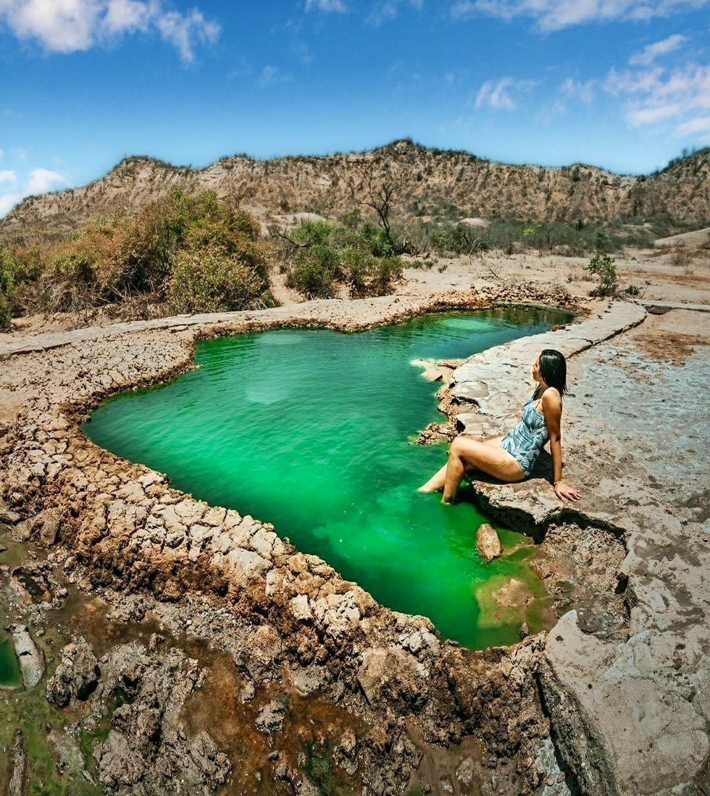
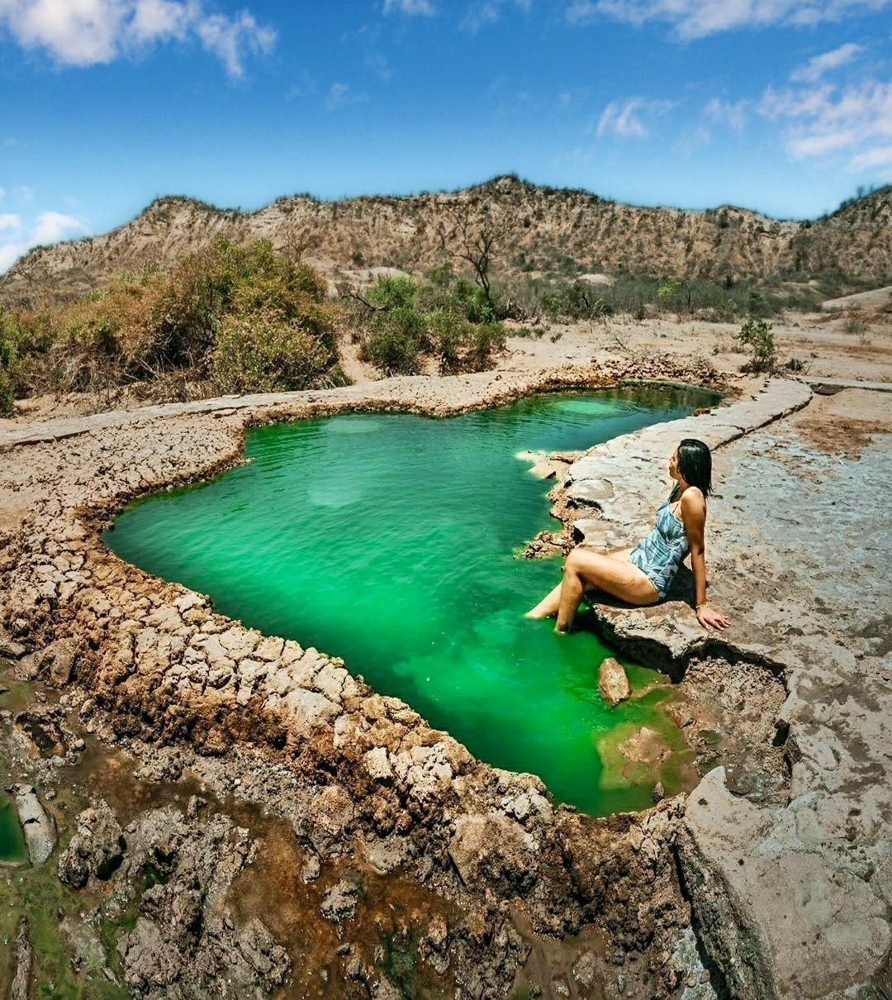

Descripción del recorrido
1er día: Se realiza el encuentro en la Plaza de Armas de Tumbes a las 9:00am. Se incluirán 2 paradas: el
balneario de Punta Sal, que es considerada una de las mejores playas de la región por la calidez y
tranquilidad de
sus aguas durante todo el año y el aspecto blanco de sus arenas; y la playa de Zorritos. A las 11:00am se
ingresará desde el Puerto 25 al Santuario Nacional Los Manglares de Tumbes. Mientras nos
transportamos en bote, recorreremos durante 3 horas los extensos bosques acuáticos, en los que fluyen en
armonía las aguas saladas de mar y las aguas dulces de río. Las inmensas raíces de
los manglares emergen a la superficie y se entremezclan, lo que forma un paisaje distintivo. Se podrá
visualizar una amplia biodiversidad de animales y plantas, y actividades tales como la extracción de
cangrejos rojos de manglar y las conchas negras, o la degustación de un sabroso ceviche se realizarán durante
el trayecto. Se visitarán las islas de Matapalo y Las Almejas, las cuales albergan una gran
cantidad de aves. Por último, se desembarcará en Punta Capones, considerada la primera playa del norte del
Perú, en donde si se desea, se podrá disfrutar de un agradable baño, para finalmente regresar a
la Plaza de Armas de Tumbes.
2do día: A las 8:00am, nos encontraremos en el parque Francisco Bolognesi para partir hacia el Parque Nacional
Cerros de Amotape, el bosque seco ecuatorial mejor conservado de toda la región.
Tras un recorrido de 35km. desde Tumbes, llegaremos a la Quebrada Angostura que es punto de acceso hacia el
parque nacional. Desde allí, el autobús nos llevará hasta la quebrada Alambique, donde emprenderemos una
sencilla
ruta de senderismo de 30 minutos siguiendo el curso del arroyo. Durante la caminata tendremos la oportunidad
de apreciar la biodiversidad de los Cerros de Amotape, donde habitan mamíferos, aves,
insectos e incluso reptiles como serpientes e iguanas, así como árboles de más de 30 metros de altura. Al
final del sendero, nos espera la quebrada Huarapal. Sus cascadas cuentan con toboganes naturales que dan hacia
una piscina,
en donde podremos bañarnos. Tras disfrutar de este enclave, iremos al poblado de Cabuyal para tomar un
almuerzo que incluye entrante, plato principal y una bebida. Por último, nos dirigiremos al
complejo arqueológico Cabeza de Vaca, que data de la época preinca. Se han hallado piezas de cerámica,
osamentas e instrumentos de piedra y un taller, donde se trabajaban conchas spondylus y otros moluscos.
Asimismo, se ha encontrado una pirámide trunca o huaca de adobe denominada "Cabeza de Vaca", de 250 metros de
largo, 100 metros de ancho y 15 metros de alto. También un camino de 8 km construido con canto rodado, que
conectaba
el sitio arqueológico con el litoral. Se finalizará el recorrido al volver al parque Francisco Bolognesi.


 
